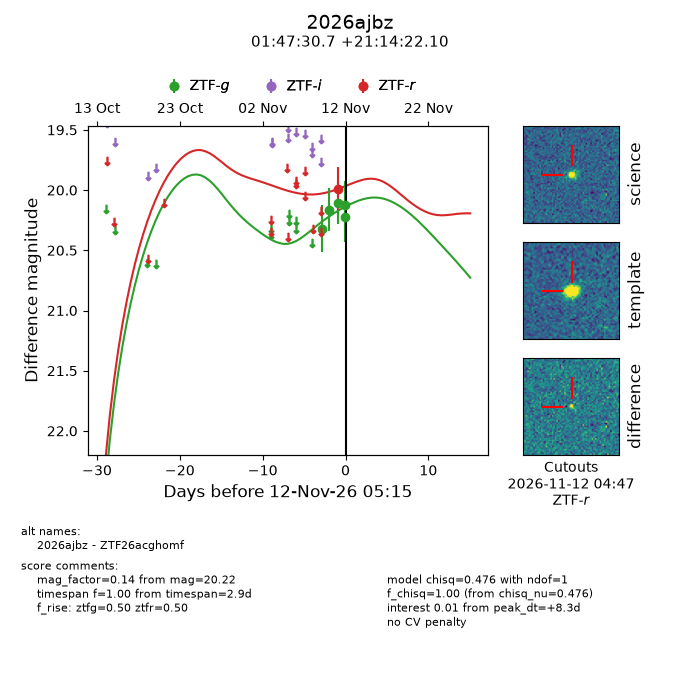
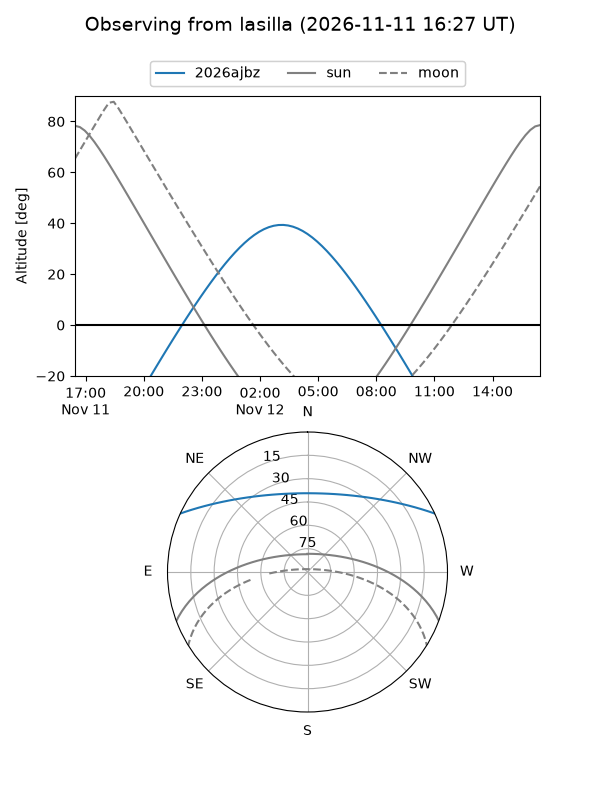
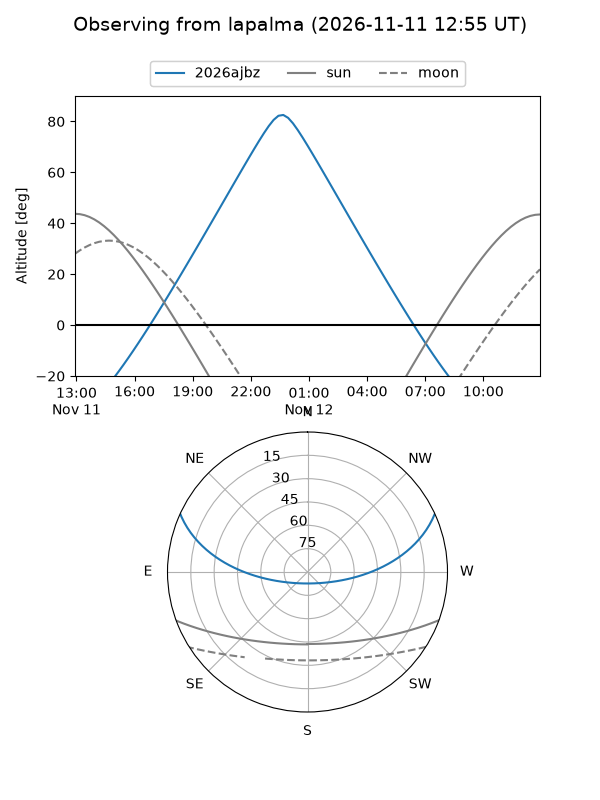
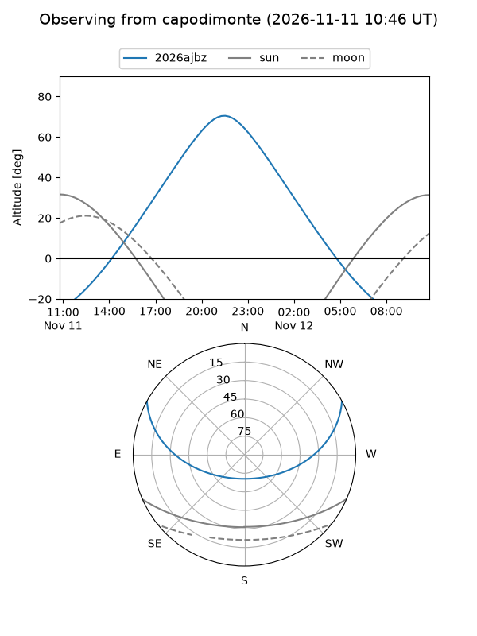
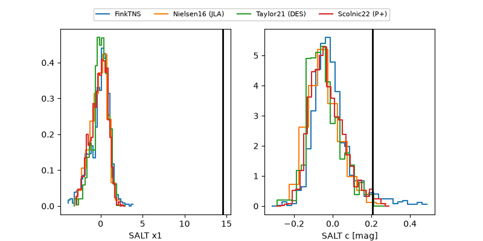

2026ajbz
Target 2026ajbz at 2026-11-12 05:17
Aliases and brokers:
FINK-ZTF: ztf.fink-portal.org/ZTF26acghomf
Lasair-ZTF: lasair-ztf.lsst.ac.uk/objects/ZTF26acghomf
ALeRCE-ZTF: alerce.online/object/ZTF26acghomf
YSE-PZ: ziggy.ucolick.org/yse/transient_detail/2026ajbz
TNS name: wis-tns.org/object/2026ajbz
Direct TNS query: direct search
alt names
ZTF26acghomf (ztf,fink_ztf)
2026ajbz (tns,yse)
Coordinates:
equatorial (ra, dec) = 26.8778,+21.23947
equatorial (HMS+DMS) = 01:47:30.68,+21:14:22.10
galactic (l, b) = (140.0131,-39.76515)
Flags:
peak dt: +8.3
Photometry:
last ztfg=20.22, ztfr=19.99
5 ztfg, 1 ztfr detections
Lightcurve

Visibility



Additional plots
